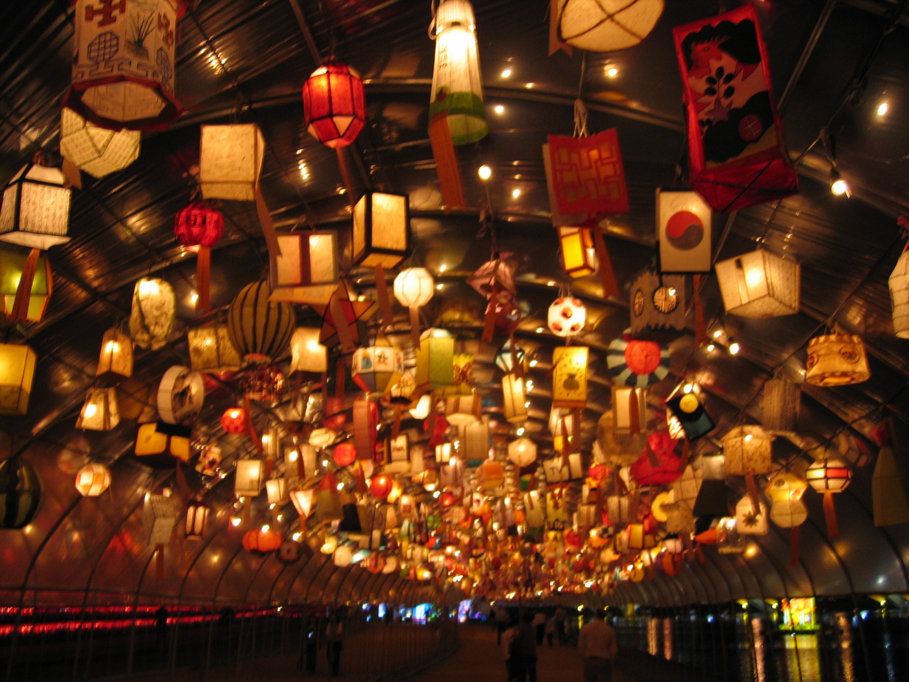
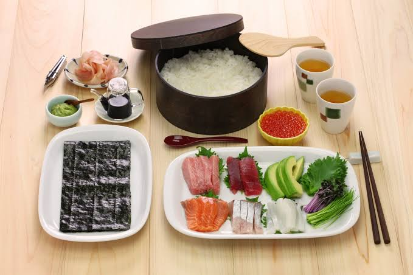
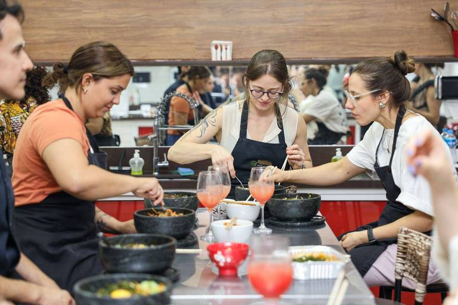

Semana da Cultura Japonesa
Culinária, tradição e encontros
Galeria
Imagens da ambientação, dos ingredientes e das atividades práticas do evento.

Ambientação da noite cultural.

Ingredientes das oficinas.

Atividade prática em grupo.
Semana da Cultura Japonesa
Todos os direitos reservados.